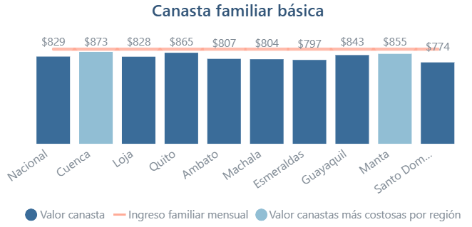

La media es una medida estadística con la cual se obtiene un valor promedio de un conjunto de datos.
Sirve para funcionar el centro de gravedad o punto de equilibrio donde los
valores altos y bajos se compensan perfectamente.
La moda estadística es el valor que más se repite dentro de un conjunto de datos. Sirve para identificar
el dato más común o frecuente en un grupo. Se utiliza mucho para analizar preferencias,
comportamientos o tendencias.
Esto significa que el número más frecuente de casos de femicidios
entre las provincias analizadas se encuentra alrededor de 26 casos.
Calculadora para encontrar la moda
...
Porcentaje
¿Qué es el porcentaje y para qué sirve?
...
Fórmula
...
Ejemplo real paso a paso
...
Calculadora para encontrar porcentajes
...
Tendencia
¿Qué es la tendencia y para qué sirve?
La tendencia en estadística es la dirección o comportamiento que siguen los datos a lo largo del tiempo.
Permite identificar si algo aumenta, disminuye o se mantiene estable. Sirve para analizar cambios en el tiempo,
predecir comportamientos futuros y tomar decisiones basadas en datos.
Esto significa que en Ecuador hubo un aumento promedio de aproximadamente 2757 homicidios
por año entre 2021 y 2023, mostrando una tendencia creciente de violencia.
Calculadora para encontrar tendencias
...
Interpretación de gráficos
...
¿Qué es la interpretación de gráficos y para qué sirve?
...
Ejemplo real paso a paso
...
Ejercicio
...
Análisis de datos
¿Qué es el análisis de datos y para qué sirve?
El análisis de datos es el proceso de examinar, limpiar, transformar y modelar datos con el
objetivo de descubrir información útil, llegar a conclusiones y apoyar la toma de decisiones.
Sirve para tomar decisiones estratégicas basadas en el comportamiento de los clientes, optimizar
las operaciones reduciendo costos e ineficiencias, e impulsar la innovación mediante productos
y servicios personalizados según las necesidades del usuario.
Ejemplo real paso a paso
Tema: Canasta familiar básica en Ecuador

1. Ordenar los datos
774, 797, 804, 807, 828, 829, 843, 855, 865, 873
2. Valor máximo y mínimo
\[Máximo: Cuenca = 873\]
\[\text{Mínimo:}\text{ Santo Domingo} = 774\]
Diferencia:
\[873−774=99\]
Esto significa que hay una diferencia de 99 dólares entre la ciudad más cara y la más barata.
* La canasta básica promedio en Ecuador es de aproximadamente $827.5.
* Varias ciudades están cerca de este valor (Quito, Guayaquil, Loja).
* Cuenca es la ciudad con mayor costo.
* Santo Domingo tiene el costo más bajo.
5. Conclusión
El análisis de estos datos permite ver que el costo de vida en Ecuador
no es igual en todas las ciudades, pero se mantiene alrededor de los $820–$830 en
promedio, según la canasta básica del INEC.
Ejercicio
...
Detección básica de anomalías
...
¿Qué es la deteccion básica de anomalías y para qué sirve?